Лекция 3. RAID-массивы: теория и практикапостроения
Введение
На прошлой лекции мы научились размечать диски. Но один диск — это единая точка отказа. Если
он сломается, данные будут потеряны. Как этого избежать? Первое решение, которое приходит в
голову — дублирование. Именно на этом принципе построена технология RAID (Redundant Array of
Independent Disks — избыточный массив независимых дисков).
Изначально RAID разрабатывался для повышения производительности (за счет параллельной записи),
но сегодня его главная задача — обеспечение отказоустойчивости и/или увеличение скорости работы.
Важно понимать: RAID — это не резервное копирование. Он защищает от
поломки диска, но не от случайного удаления файла или вируса.
Часть 1. Основные понятия и терминология
Прежде чем говорить об уровнях, определим ключевые термины:
- Массив (Array): Группа физических дисков, объединенных
в один логический.
- Страйп (Strip): Сегмент данных, записываемый на один диск
в массиве. Размер страйпа (strip size) — важный параметр (обычно от 4 КБ до
256 КБ).
- Чередование (Striping): Разбиение потока данных на блоки
и запись их на разные диски по очереди.
- Зеркалирование (Mirroring): Полное дублирование данных на
двух или более дисках.
- Четность (Parity): Избыточная информация, рассчитываемая по
данным и позволяющая восстановить содержимое одного вышедшего из строя диска.
- Hot Spare (горячий резерв): Диск в системе, который не
используется активно, но автоматически подключается к массиву для замены отказавшего диска.
Часть 2. Базовые уровни RAID
Стандартизировано несколько уровней RAID. Мы рассмотрим самые популярные.
2.1 RAID 0 — Striping (чередование)
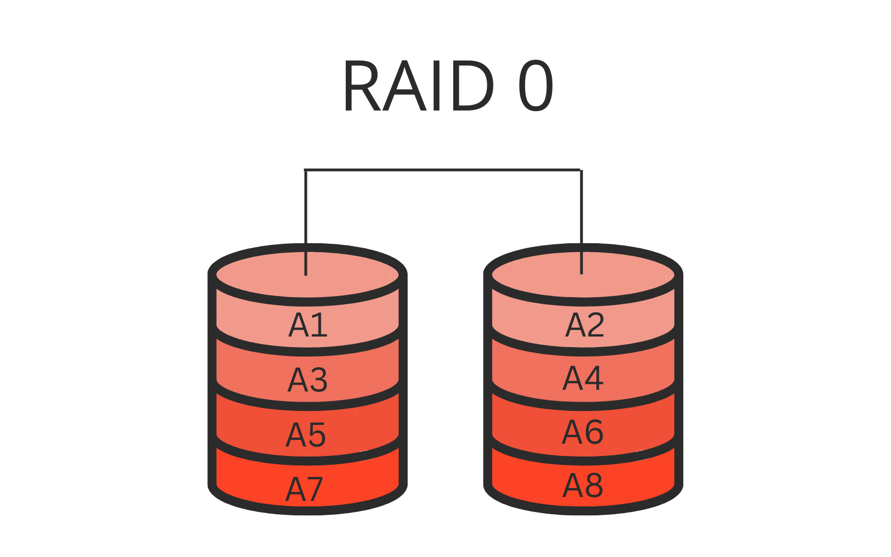
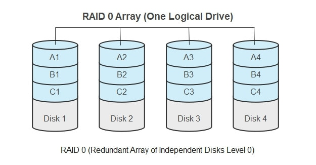
- Как работает: Данные разбиваются на блоки и записываются
поочередно на все диски массива (минимум 2 диска).
- Формула емкости:
Сумма объемов всех дисков.
(Если 2 диска по 500 ГБ, получим 1 ТБ).
- Отказоустойчивость: Нулевая. Если
выйдет из строя любой диск, массив разрушается полностью. Восстановить данные
невозможно.
- Производительность: Максимальная. Чтение и запись выполняются
параллельно, скорость складывается (приблизительно) из скоростей всех дисков.
- Применение: Там, где важна скорость и не страшны потери
(временные файлы, кэш, рендеринг видео, игровые диски).
2.2 RAID 1 — Mirroring (зеркалирование)
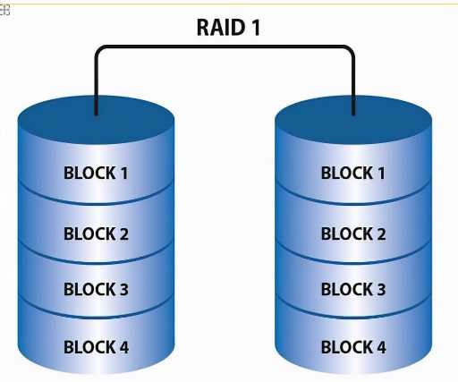
- Как работает: Данные дублируются на два диска (или более).
Запись идет одновременно на все диски, чтение может производиться с любого.
- Формула емкости:
Объем одного (самого маленького)
диска. (Два диска по 500 ГБ дадут 500 ГБ полезного пространства).
- Отказоустойчивость: Высокая. Массив продолжает работать при
выходе из строя всех дисков, кроме одного (последнего). Восстановление простое —
достаточно заменить диск и скопировать данные с зеркала.
- Производительность: Скорость записи равна скорости одного
диска (или чуть ниже, т.к. нужно ждать завершения записи на все диски). Скорость
чтения может быть выше, если контроллер умеет читать с разных дисков
параллельно.
- Применение: Системные диски, базы данных, критически важные
данные.
2.3 RAID 5 — Striping with Parity (чередование с четностью)
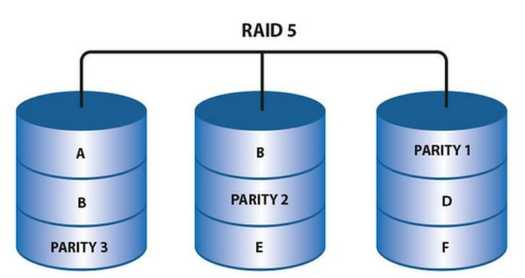
- Как работает: Требуется минимум 3 диска. Данные и блоки
четности распределяются по всем дискам. Блок четности занимает объем,
эквивалентный одному диску, и позволяет восстановить данные при отказе
одного диска.
- Формула емкости:
(N-1) * объем_диска,
где N — количество дисков. (3 диска по 500 ГБ → 1 ТБ полезного места).
- Отказоустойчивость: Выдерживает отказ одного диска. Во время
восстановления (rebuild) массив очень уязвим: при ошибке чтения на втором диске
данные будут потеряны.
- Производительность: Скорость чтения высокая (близка к RAID
0). Скорость записи ниже, т.к. нужно вычислять и записывать четность (это вызывает
так называемый «штраф записи» — на каждую операцию записи приходится 4 операции
ввода-вывода: чтение старых данных, чтение старой четности, запись новых данных,
запись новой четности).
- Применение: Файловые серверы, веб-серверы, хранилища общего
назначения (где много чтения и умеренная запись).
2.4 RAID 6 — Striping with Double Parity
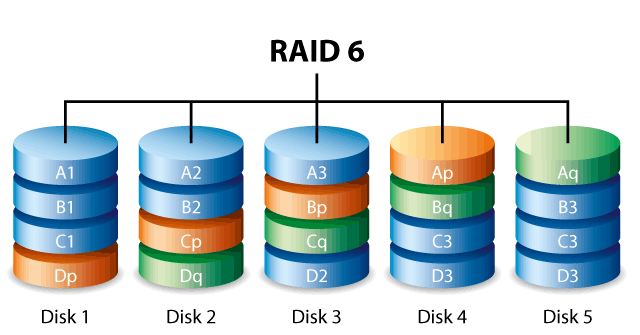
- Как работает: Аналогичен RAID 5, но четность рассчитывается
по двум разным алгоритмам и занимает объем двух дисков. Требуется минимум 4
диска.
- Формула емкости:
(N-2) * объем_диска.
- Отказоустойчивость: Выдерживает отказ
двух дисков одновременно. Это критически важно для больших массивов,
где время восстановления велико.
- Производительность: Скорость записи еще ниже, чем у RAID 5,
из-за двойного штрафа. Чтение — по-прежнему быстрое.
- Применение: Крупные файловые архивы, видеонаблюдение,
системы, где время восстановления массива исчисляется сутками.
2.5 RAID 10 (1+0) — зеркало из страйпов
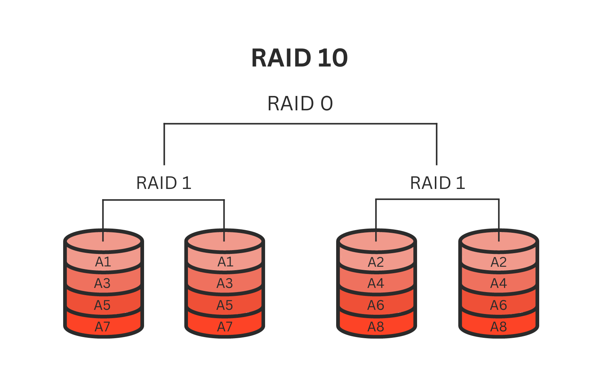
- Как работает: Сначала диски объединяются в зеркальные пары
(RAID 1), а затем эти пары объединяются в страйп (RAID 0). Минимум 4 диска.
- Формула емкости:
(N/2) * объем_диска.
- Отказоустойчивость: Высокая. Может потерять до половины
дисков, но не все в одной зеркальной паре.
- Производительность: Очень высокая. Сочетает скорость
чтения/записи RAID 0 и надежность зеркалирования. Штраф записи ниже, чем у
RAID 5/6.
- Применение: Высоконагруженные базы данных, серверы
виртуализации — везде, где критичны и скорость, и надежность.
Часть 3. Аппаратный против программного RAID
Существует два принципиально разных способа реализации RAID.
3.1 Аппаратный RAID
- Как работает: Используется специальный RAID-контроллер —
физическая плата, которая подключается к дискам и имеет собственный процессор
(часто с аппаратным ускорением вычислений XOR для четности) и кэш-память (иногда
с батарейкой для защиты кэша при сбое питания).
- Плюсы:
- Не нагружает центральный процессор сервера.
- Имеет собственную кэш-память, что повышает производительность.
- Операционная система видит готовый логический диск и не знает о физической
структуре массива.
- «Горячая замена» дисков часто реализована на уровне контроллера и корзины.
- Минусы:
- Дороговизна.
- Привязка к конкретной модели контроллера. Если контроллер сгорает, найти точно
такой же для восстановления данных может быть сложно.
- Сложность диагностики.
Роль HBA (Host Bus Adapter)
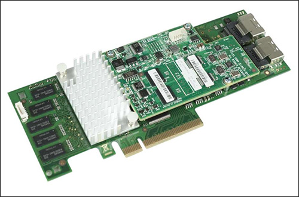
Прежде чем говорить о кабелях и разъемах, важно понять, что связующим звеном между системной
шиной сервера (PCIe) и дисками является специальный адаптер — HBA (Host Bus
Adapter).
В контексте аппаратного RAID эту функцию выполняет RAID-контроллер, который по сути является
HBA с собственным процессором и кэш-памятью.
С точки зрения физики процесса:
- Серверная часть: HBA вставляется в слот PCIe материнской
платы, получая питание и высокоскоростной канал обмена данными с процессором и
оперативной памятью сервера.
- Дисковая часть: HBA предоставляет один или несколько портов
для подключения дисков. Каждый порт, в зависимости от стандарта (SAS, SATA, Fibre
Channel), поддерживает подключение нескольких накопителей.
Установка HBA в сервер
Процесс установки HBA стандартизирован и включает несколько ключевых этапов:
- Меры предосторожности: Обязательно использование
антистатического браслета для предотвращения повреждения электронных
компонентов статическим электричеством.
- Выбор слота: HBA требует свободного слота PCIe
соответствующего размера (обычно x4, x8 или x16). Важно, чтобы слот поддерживал
необходимую пропускную способность (например, PCIe 3.0 x8 для SAS-3).
- Фиксация: После установки карта фиксируется в слоте либо
специальным зажимом, либо винтом к задней стенке корпуса.
Типы разъемов на HBA
Разъемы на HBA зависят от поколения интерфейса и назначения (подключение внутренних дисков
внутри корпуса сервера или внешних дисковых полок). Наиболее распространены следующие типы
коннекторов:
- SFF-8087 (Mini-SAS internal): Старый, но всё ещё широко
распространенный тип внутреннего разъема. Один порт SFF-8087 объединяет 4
линии SAS.
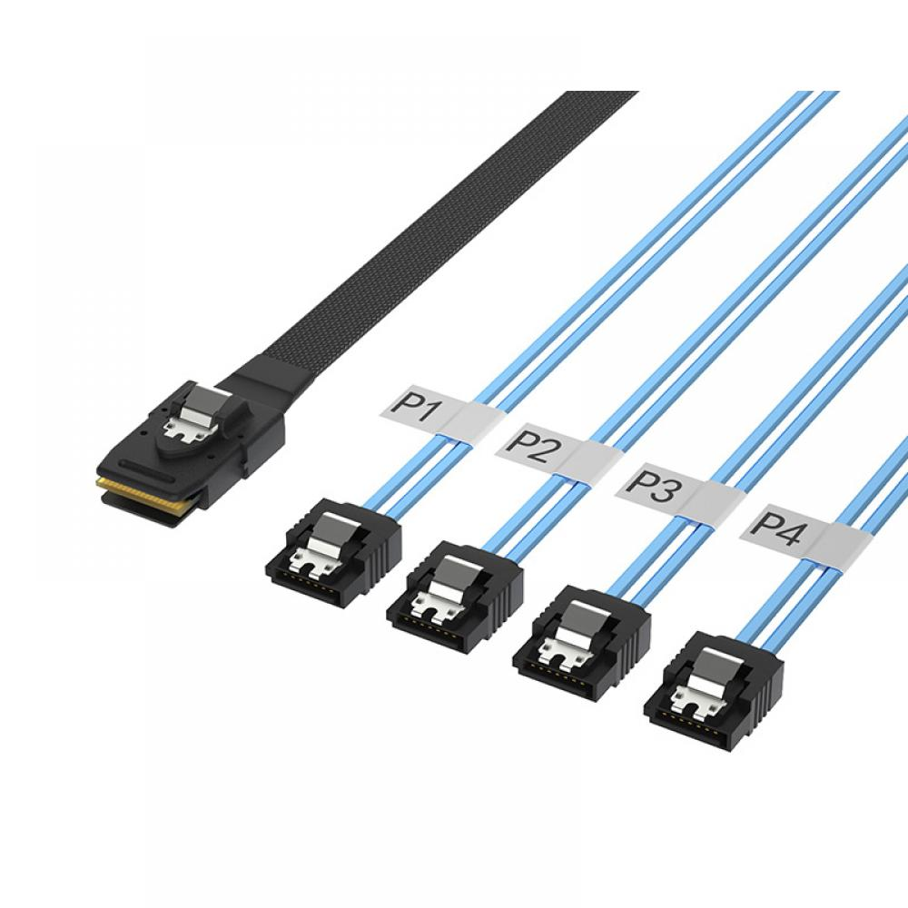
- SFF-8643 (Mini-SAS HD internal): Новый стандарт внутреннего
подключения. Более компактный и предназначен для более высоких скоростей (до 12
Гбит/с и выше).
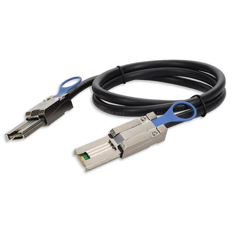
- SFF-8088 (Mini-SAS external): Используется для подключения
внешних дисковых полок (JBOD). Имеет усиленную конструкцию для защиты от
физических повреждений.
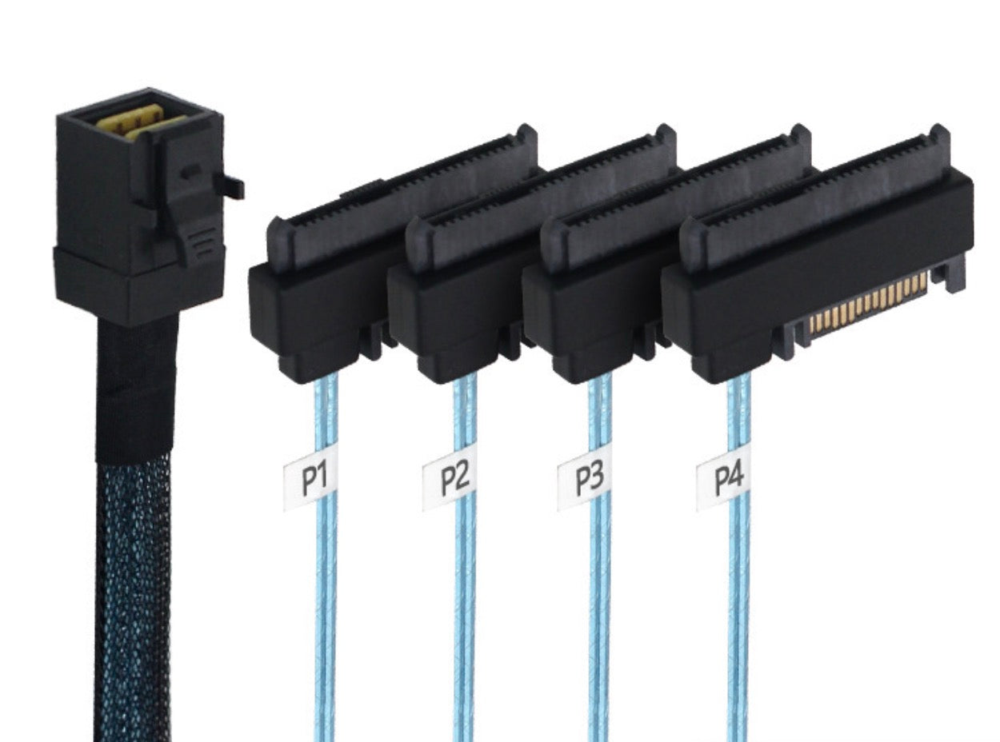
- SFF-8644 (Mini-SAS HD external): Аналог SFF-8643 для
внешнего подключения, обеспечивающий максимальную пропускную способность для
современных внешних хранилищ.
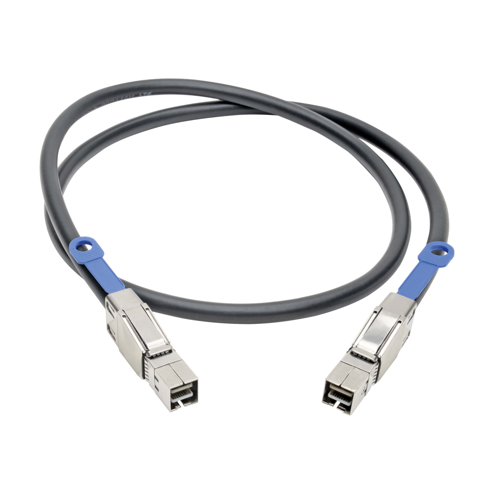
Кабели и способы подключения
Для соединения HBA с дисками используются специальные кабели. Конфигурация подключения зависит
от типа накопителей и их расположения.
Прямое подключение (Direct-Attach):
- Используются breakout-кабели (или "fan-out"
кабели). Один конец такого кабеля имеет плотный разъем (например, SFF-8087),
который подключается к HBA, а другой разветвляется на 4 отдельных коннектора
для непосредственного подключения к 4 дискам.
- Коннекторы для дисков могут быть:
- SFF-8482: Универсальный коннектор для SAS и SATA
дисков. Имеет единый разъем для данных и питания.
- SATA: Стандартный L-образный разъем для
SATA-дисков.
Этот способ удобен для подключения небольшого количества дисков непосредственно внутри сервера,
если там нет специальной корзины.
Подключение через бэкплейн (Backplane):
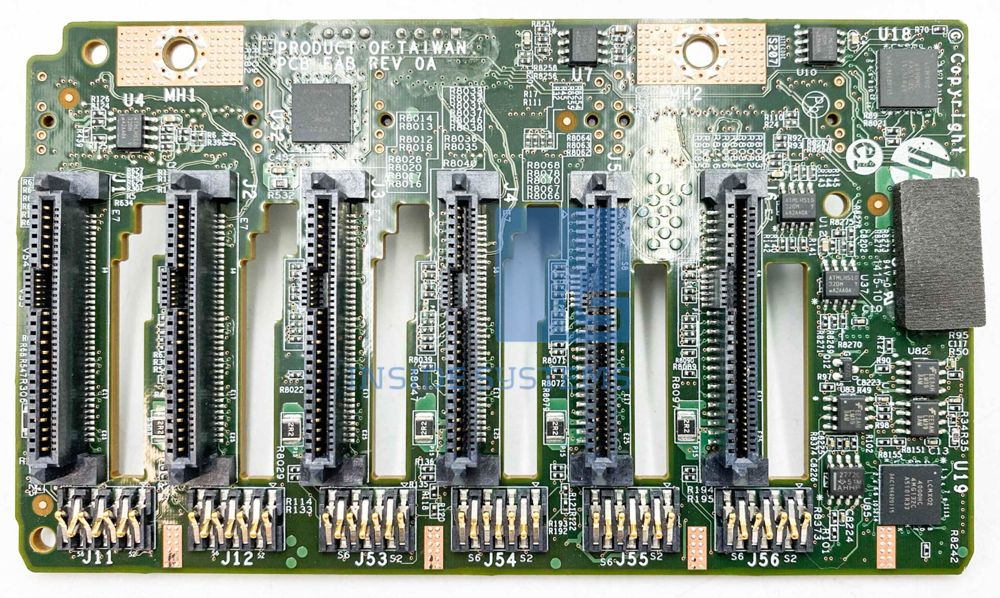
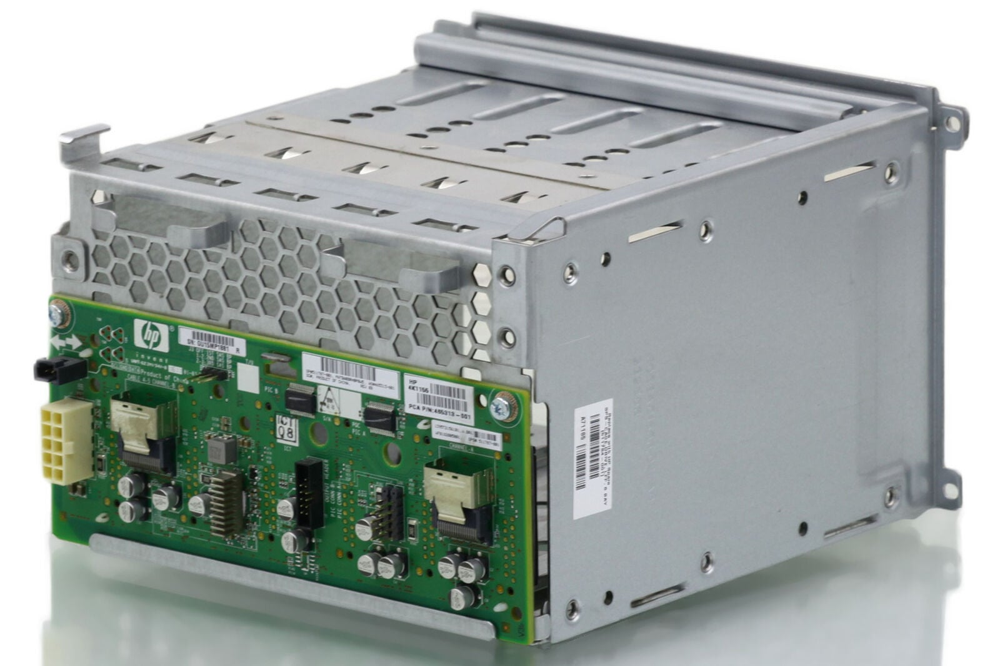
- В серверных корзинах (дисковых полках) используется печатная плата с разъемами для
дисков — бэкплейн.
- В этом случае кабель от HBA подключается не к каждому диску индивидуально, а к
специальному разъему на бэкплейне. Бэкплейн сам распределяет сигнал и питание
по установленным в корзину дискам.
Это основной способ подключения в серверах корпоративного класса. Он обеспечивает порядок в
кабелях, поддержку горячей замены и часто включает в себя расширители (SAS expanders), позволяющие
подключать десятки дисков к одному порту HBA.
Топологии подключения для отказоустойчивости
В критически важных системах используются схемы с резервированием путей доступа к данным:
- Одиночный HBA с двумя портами: Сервер оснащается одним HBA,
но на самой дисковой полке используются два контроллера. Кабели соединяют каждый
порт HBA с разными контроллерами полки. Это обеспечивает защиту на случай отказа
одного из контроллеров полки или кабеля.
- Два HBA (multipath I/O): В сервер устанавливаются два
независимых HBA. Каждый из них подключается к одному из двух контроллеров
дисковой полки. Специальное ПО (многопутевой ввод-вывод, MPIO) на уровне
операционной системы распределяет нагрузку между двумя путями и автоматически
переключается на резервный путь при отказе любого компонента (HBA, кабель,
контроллер полки).
Электропитание и охлаждение
Аппаратные компоненты потребляют энергию и выделяют тепло:
- Потребление HBA: Сама карта HBA/RAID-контроллер потребляет
от 10 до 25 Вт.
- Питание дисков: Каждый жесткий диск (HDD) потребляет около
10-15 Вт в активном режиме. SSD — меньше. При проектировании системы критически
важно рассчитать суммарное энергопотребление, чтобы блок питания сервера не был
перегружен.
- Охлаждение: HBA часто оснащаются радиаторами для пассивного
охлаждения, но в плотных конфигурациях требуется активный обдув корпуса сервера
для отвода тепла от контроллера и дисков.
Пример: Fibre Channel HBA
Отдельно стоит упомянуть HBA для сетей хранения данных (SAN) на основе Fibre Channel. Внешне
они очень похожи на SAS HBA, но вместо электрических разъемов mini-SAS используют оптические
(или медные) трансиверы (обычно SFP+ или SFP28). Они подключаются не напрямую к дискам, а к
Fibre Channel коммутатору, который уже обеспечивает связь с дисковым массивом.
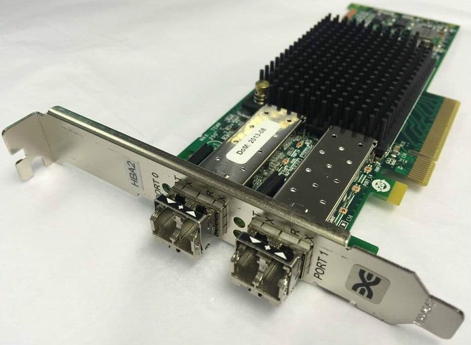
3.2 Программный RAID
Как работает: Управление массивом берет на себя операционная
система. В Linux это делает подсистема md (multiple devices) и утилита
mdadm.
- Плюсы:
- Бесплатно (входит в состав ОС).
- Гибкость: можно собрать массив из любых разделов, включая разделы на разных
контроллерах.
- Независимость от оборудования: массив можно перенести на другой компьютер с
Linux, и он соберется.
- Возможность тонкой настройки.
- Минусы:
- Нагружает центральный процессор (особенно при вычислении четности в
RAID 5/6).
- Зависит от стабильности ОС.
- Если загрузочный диск программный, его настройка сложнее.
mdadm — это стандартная утилита для управления программным RAID в
Linux. Она позволяет создавать, собирать, мониторить и чинить массивы.
Детали реализации: метаданные (суперблоки)
Когда мы создаем программный RAID с помощью mdadm, на каждом диске, входящем в массив,
служебная информация не хранится где-то отдельно — она записывается непосредственно на сам
диск. Эта область называется метаданными или
суперблоком. Она критически важна: именно из неё система при загрузке узнает, что диск
является частью массива, какова его роль и в каком состоянии массив был остановлен.
Существует два основных формата метаданных, и понимание их различий критично для
администратора.
Версия 0.90
Это старый, но проверенный временем формат.
Расположение: Суперблок размером 4 КБ записывается в 64-КБ области,
которая находится за 64 КБ от конца диска. Проще говоря, отсчитываем
128 КБ от конца диска — там и находится суперблок.
Особенности:
- Максимальный размер устройства — 2 ТБ.
- Максимальное количество дисков в массиве — 28.
- Хранит данные в формате, зависящем от процессора (little-endian или big-endian).
Это значит, что массив, созданный на системе с Intel, может не собраться на
системе с PowerPC.
Главное преимущество: Именно этот формат требуется для разделов
/boot со старыми версиями GRUB, так как загрузчик не умеет читать другие версии
метаданных.
Версия 1.x
Современный формат, который рекомендуется использовать для всех новых массивов (кроме
/boot в старых системах). Он лишен недостатков предшественника.
Существует в трех вариациях, которые отличаются расположением суперблока на
диске:
- 1.0: Суперблок находится в конце
диска (на границе 8-12 КБ от конца). Это наиболее совместимый вариант с другими
ОС, так как в начале диска лежат «чистые» данные.
- 1.1: Суперблок находится в самом
начале диска.
- 1.2: Суперблок находится, отступив 4 КБ
от начала диска. Это значение по умолчанию в современных версиях mdadm.
Общие особенности версии 1.x:
- Поддержка дисков размером более 2 ТБ.
- Поддержка до 384 дисков в массиве (и более).
- Аппаратно-независимый формат (big-endian).
- Содержит UUID массива, метку времени, состояние массива (clean, dirty).
Почему это важно знать на практике?
Если вы потеряли
конфигурацию RAID (сломался сервер, и нет файла /etc/mdadm.conf), утилита
mdadm --assemble --scan ищет суперблоки на всех дисках. Зная их
расположение, можно попытаться восстановить массив вручную, даже если автоматика не сработала.
Кроме того, расположение суперблока влияет на то, можно ли будет потом загрузиться с этого
диска.
От суперблока к контейнерам: внешние метаданные
Ядро Linux также поддерживает работу с так называемыми внешними метаданными
(external metadata). В этом случае управление метаданными берет на себя программа
пользовательского пространства (обычно mdmon), а ядро только выполняет
операции чтения/записи. Это сделано для того, чтобы не "засорять" ядро кодом для
поддержки всех существующих проприетарных форматов.
Здесь же возникает понятие контейнера (container). Некоторые форматы
метаданных (например, Intel Matrix Storage, который используется в VROC) описывают не один массив,
а целый набор массивов, созданных из общего пула дисков. В этом случае ядро видит специальное
устройство-контейнер, которое покрывает только область с метаданными, а все остальное пространство
дисков доступно для создания в нем гибких конфигураций RAID. Это подводит нас к следующей важной
технологии.
3.3 Эволюция: Intel VROC (Virtual RAID on CPU)
Долгое время выбор был между дешевым программным RAID (нагрузка на CPU) и дорогим аппаратным
(быстро, но свой процессор и кэш). Технология Intel VROC (Virtual RAID on CPU) предлагает третий,
гибридный путь, ставший стандартом для высокопроизводительных серверов.
Проблема, которую решает VROC
С появлением быстрых NVMe-дисков, подключаемых напрямую к линиям PCIe процессора, традиционные
RAID-контроллеры стали "узким горлышком". Они не успевали обрабатывать поток данных от
сверхбыстрых SSD. Кроме того, подключение NVMe-диска через HBA-контроллер вносило лишние задержки.
VROC позволяет объединять NVMe-диски в RAID, подключая их напрямую к
процессору, минуя отдельный контроллер.
Как это работает: Архитектура VROC
VROC — это программно-аппаратный комплекс:
- Аппаратная часть (Intel VMD): В процессорах Intel Xeon
Scalable есть встроенный контроллер VMD (Volume Management
Device). Это логика, встроенная в корневой комплекс PCIe процессора.
VMD берет на себя функции, ранее возлагавшиеся на HBA: изоляция ошибок диска
от ОС (чтобы краш диска не повалил систему), поддержка горячей замены и
управление индикаторами NVMe-дисков.
- Программная часть: В ядре Linux используется стандартный
драйвер
md (тот же, что и для обычного программного RAID), но он
работает в связке с драйвером VMD. Метаданные при этом хранятся во внешнем
формате, совместимом с Intel. Управление происходит стандартной утилитой
mdadm, которая понимает этот формат.
Таким образом, Intel VROC берет лучшее от двух миров: низкую задержку и скорость прямого
доступа к CPU (как у программного RAID) и серверные функции (горячая замена, диагностика), как
у аппаратного.
Лицензирование и ключи
Важная особенность VROC — аппаратное лицензирование. Чтобы включить функционал RAID в BIOS/UEFI
и получить поддержку разных уровней, на материнскую плату необходимо установить специальный
аппаратный ключ (OEM-ключ). Без ключа меню VROC в BIOS скрыто.
Существует несколько уровней лицензий (ключей):
- Intel® VROCSTANMOD (Standard): Поддержка RAID 0, 1 и 10.
Разрешены любые NVMe-диски.
- Intel® VROCINTMOD (Intel SSD Only): Поддержка RAID 0, 1,
5 и 10, но только с дисками Intel.
- Intel® VROCPREMMOD (Premium): Поддержка RAID 0, 1, 5, 10
и управление SED (самошифрующимися дисками) для NVMe-дисков
любых производителей.
Это маркетинговое решение вызывает споры в сообществе, но с технической точки зрения VROC
обеспечивает недостижимую ранее производительность для NVMe-массивов (миллионы IOPS).
Часть 4. Понятие Hot Spare и восстановление
4.1 Hot Spare (горячий резерв)
Это диск, который подключен к системе, но не входит в активный массив. Контроллер (или mdadm)
постоянно мониторит состояние массивов.
- Как работает: Как только один из дисков в массиве помечается
как отказавший, система автоматически инициирует процесс восстановления, подключая
горячий резерв и начиная перестройку массива на него.
- Зачем нужно: Сокращает время простоя и время, в течение
которого массив находится в уязвимом состоянии (без избыточности).
4.2 Процесс восстановления (Rebuild)
Это процесс пересчета данных на новом диске на основе информации с остальных дисков (четности
или зеркала).
- Во время восстановления массив работает в деградированном режиме.
- Производительность сильно падает.
- Если во время восстановления возникнет ошибка чтения на каком-либо из оставшихся
дисков, массив может быть разрушен полностью (особенно для RAID 5). Поэтому так
важен мониторинг S.M.A.R.T. атрибутов дисков и их своевременная замена.
Часть 5. Резюме и вопросы
Ключевые выводы:
- RAID 0 — скорость, но ноль надежности.
- RAID 1 — простое и надежное зеркало.
- RAID 5/6 — экономия места с защитой, но штраф на запись.
- RAID 10 — золотая середина для критичных нагрузок.
- Выбор между аппаратным и программным RAID зависит от бюджета, требований к
производительности и гибкости.
Вопросы для самопроверки:
- У вас есть 4 диска по 2 ТБ. Какой полезный объем вы получите в RAID 5, RAID 6,
RAID 10?
- Почему RAID 5 не рекомендуется использовать с дисками большого объема (например,
10 ТБ и выше)?
- Что такое «деградированный режим»?
- В каком случае программный RAID может быть предпочтительнее аппаратного?
Лекция 4. Шифрование хранилищ(LUKS)
Введение
RAID защищает нас от поломки дисков, но что, если диск украдут, или сервер вынесут из
дата-центра? Если данные на диске не зашифрованы, злоумышленник может подключить его к другой
системе и прочитать всё содержимое.
Шифрование диска решает эту проблему. Даже если физический носитель попадет в чужие руки,
данные на нем будут выглядеть как случайный набор байтов. В мире Linux стандартом де-факто для
шифрования дисков является LUKS (Linux Unified Key Setup).
Часть 1. Основы криптографии для СХД
1.1 Симметричное шифрование
LUKS использует симметричное шифрование. Это означает, что для шифрования и расшифровки
данных используется один и тот же ключ.
- Данные разбиваются на блоки.
- Каждый блок с помощью ключа и алгоритма (например, AES) преобразуется в зашифрованный
вид.
- Без знания ключа расшифровать данные невозможно.
1.2 Мастер-ключ
В LUKS используется понятие мастер-ключа (master key). Это и есть тот
самый симметричный ключ, которым реально шифруются данные на диске.
- Мастер-ключ генерируется случайным образом при инициализации раздела.
- Он никогда не меняется за время жизни раздела (если только вы не пересоздадите
LUKS-контейнер).
1.3 Проблема: как безопасно хранить мастер-ключ?
Если мы просто зашифруем диск мастер-ключом, то где хранить сам мастер-ключ? Если хранить его
рядом с данными — это бессмысленно. Если запоминать его — это неудобно и небезопасно.
LUKS решает эту проблему элегантно: мастер-ключ шифруется с помощью паролей
пользователя и хранится в заголовке раздела.
Часть 2. Архитектура LUKS
2.1 Заголовок LUKS
При выполнении cryptsetup luksFormat на разделе создается специальный
заголовок (обычно в начале раздела). В этом заголовке содержится:
- Служебная информация: Версия LUKS, использованные алгоритмы
шифрования и хеширования.
- Слоты для ключей (Key Slots). Обычно их 8
штук (слоты 0–7).
- Каждый слот содержит копию мастер-ключа, зашифрованную определенным паролем
(или ключевым файлом).
- Слот может быть активным (заполненным), отключенным или пустым.
2.2 Процесс расшифровки
- Пользователь вводит пароль.
- Утилита
cryptsetup перебирает слоты ключей (по очереди),
пытаясь расшифровать хранящуюся в слоте копию мастер-ключа с помощью введенного
пароля.
- Как только пароль подошел к одному из слотов, мастер-ключ успешно расшифрован.
- С помощью мастер-ключа расшифровываются сами данные на диске.
2.3 Преимущества такой схемы
- Смена пароля не требует перешифровки данных. При смене пароля
мастер-ключ просто расшифровывается старым паролем и зашифровывается новым в том
же (или другом) слоте.
- Можно иметь несколько паролей для одного диска. Например,
свой пароль у администратора и свой — у резервного администратора. Можно добавить
ключевой файл для автоматической загрузки.
- Можно отозвать пароль. Просто удалив соответствующий слот.
Часть 3. Комбинация LUKS и RAID
В реальной жизни шифрование и избыточность используются вместе. Важно понимать порядок
сборки.
3.1 Вариант 1: RAID поверх LUKS
- Порядок: Диски -> Шифрование каждого диска (LUKS) ->
Объединение расшифрованных устройств в RAID.
- Как создать:
cryptsetup luksFormat /dev/sda
и /dev/sdb.cryptsetup luksOpen /dev/sda crypt-sda
и /dev/sdb crypt-sdb.mdadm --create /dev/md0 --level=1
--raid-devices=2 /dev/mapper/crypt-sda /dev/mapper/crypt-sdb.
- Плюсы: Если диск физически украдут, данные на нем зашифрованы.
Злоумышленник увидит только зашифрованный раздел.
- Минусы: Нужно вводить пароль для каждого диска при старте
системы (или использовать ключи).
3.2 Вариант 2: LUKS поверх RAID
- Порядок: Диски -> Объединение в RAID -> Шифрование
всего RAID-массива.
- Как создать:
mdadm --create /dev/md0 --level=1 --raid-devices=2
/dev/sda /dev/sdb.cryptsetup luksFormat /dev/md0.cryptsetup luksOpen /dev/md0 crypt-raid.
- Плюсы: Только один пароль для всего массива. Упрощенное
управление.
- Минусы: Если диск украдут, злоумышленник увидит и заголовок
LUKS, и структуру RAID. В прочем, ему это не сильно поможет.
Оба подхода имеют право на жизнь. Выбор зависит от требований к безопасности и удобству.
Часть 4. Автоматическое открытие при загрузке (crypttab)
Чтобы система сама спрашивала пароль и открывала нужные разделы при загрузке, используется
файл /etc/crypttab.
Формат строки:
<название_в_mapper> <устройство> <ключевой_файл> <параметры>
Пример:
sda_crypt /dev/sda2 none luks
Это означает: при загрузке найти устройство /dev/sda2, определить, что это LUKS
(параметр luks), и спросить пароль (none), а затем открыть его как
/dev/mapper/sda_crypt.
После этого в /etc/fstab можно смонтировать уже расшифрованное устройство.
Резюме и вопросы
Ключевые выводы:
- LUKS — стандарт шифрования дисков в Linux.
- Данные шифруются мастер-ключом, а мастер-ключ зашифрован паролями пользователей
и хранится в заголовке.
- Есть 8 слотов для ключей — можно иметь до 8 разных паролей.
- Смена пароля не требует перешифровки всего диска.
- LUKS можно комбинировать с RAID двумя способами: шифровать каждый диск или шифровать
готовый массив.
Вопросы для самопроверки:
- Что произойдет с данными, если повредить заголовок LUKS (например, записать что-то
в начало диска)?
- Сколько максимум паролей можно установить на один LUKS-раздел?
- Зачем нужны ключевые слоты, если можно просто шифровать паролем?
На следующих двух практиках мы:
- Соберем программный RAID 1, RAID 5 и RAID 10, сломаем и починим их.
- Зашифруем раздел, поработаем со слотами, а затем создадим связку RAID + LUKS.